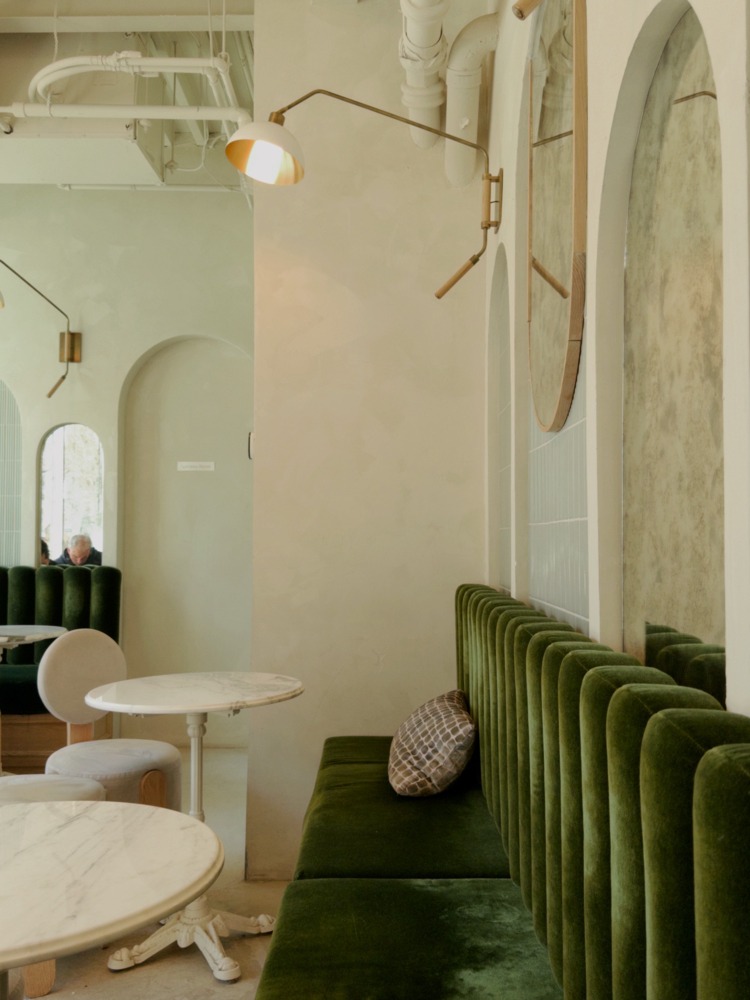
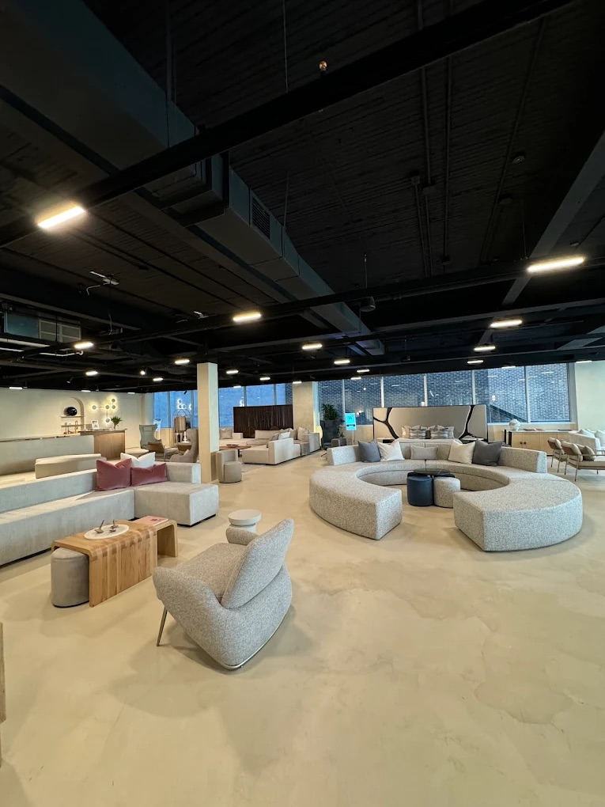
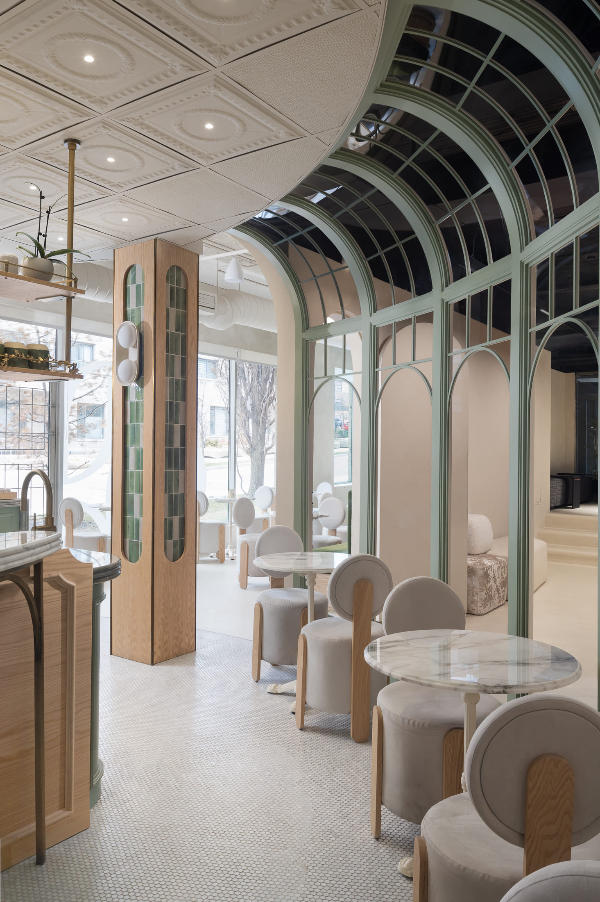
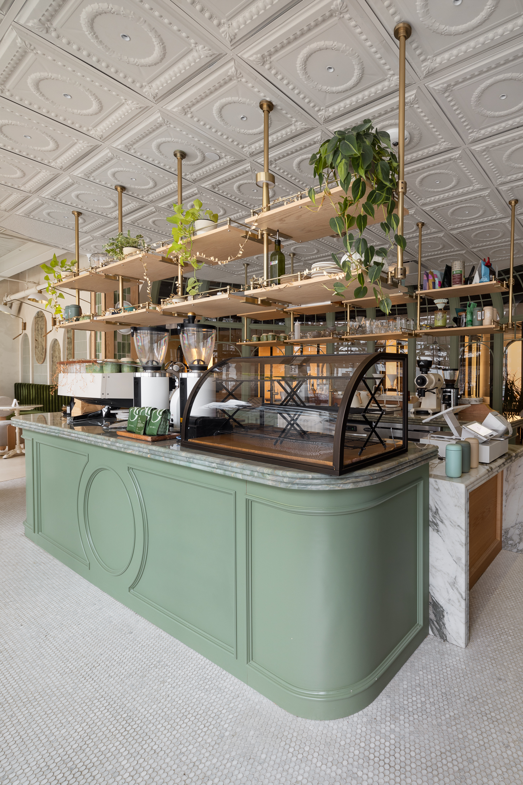

Cafe x Bica is a Portuguese-inspired café in downtown Toronto that blends specialty coffee with brunch-style dining. Known for its warm atmosphere and comfortable seating, it’s a popular spot for both casual hangouts and relaxed study sessions. While it may not be the quietest café, it offers a cozy environment that works well for longer stays and working with friends.
160 Pears Ave. Unit 100, Toronto, ON M5R 1S9
Open daily from 8am-7pm. It’s busy during brunch and peak hours but more relaxed during non-peak times. It’s best to visit during quieter hours if you plan to study.
While it’s suitable for studying, it may not be the best option if you need access to power outlets.
Offers free Wi-Fi for customers. It is considered an aesthetic spot with stable, high-quality internet.

Cafe x Bica features plush, comfortable chairs and luxurious marble-topped tables set within a stylish, European-inspired interior. The seating is designed for both relaxing coffee breaks and, in some areas, working.

Ideal for group study but table might be small. Comfortable chair is godd setup for studying with friends or working for extended periods.

The setup is cozy and comfortable where you can chat with friends but might be hard to study where there's no table to place your laptop.

Seating for individual or duo for studying.

Cafe x Bica offers a mix of coffee, brunch items, and Portuguese-inspired food, making it more food-focused than a typical study café. The café is known for combining good quality coffee with food items, making it a great option for longer visits.
Has a warm and inviting atmosphere that feels more relaxed and social compared to minimalist study cafes. It feels more like a chill café to spend time in, rather than a strictly quiet study space.
It’s a popular brunch and social spot, it’s better suited for casual studying rather than deep focus.
The music adds to the relaxed vibe but may be distracting for those needing complete silence.
Personal Comment
Cafe x Bica is a great spot for casual studying or working with friends but it’s also more a brunch place to hang than study. The comfortable seating and warm atmosphere make it easy to stay for longer periods, but the noise level can make it harder to focus during busy hours.